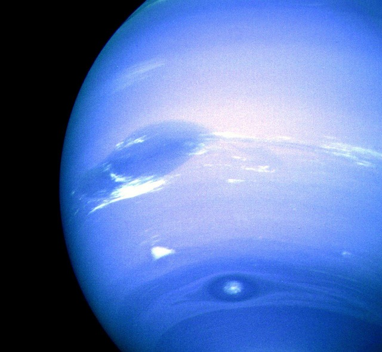

The Distant Blue Giant
A Mysterious World of Ice, Wind, and Wonder

Rediscover Wonder: Neptune, the farthest planet from the Sun, is a swirling sphere of deep blue mystery. Its icy winds and distant orbit remind us how vast and untamed the outer solar system truly is.
Unplug and Unwind: No noise, no distractions—just the quiet majesty of a planet 2.8 billion miles away.

Learn and Explore: From its supersonic storms to its moon Triton’s retrograde orbit, Neptune offers endless opportunities for discovery and awe. It’s a gateway to planetary science and cosmic curiosity.
“
Somewhere, something incredible is waiting to be known.
— Carl Sagan